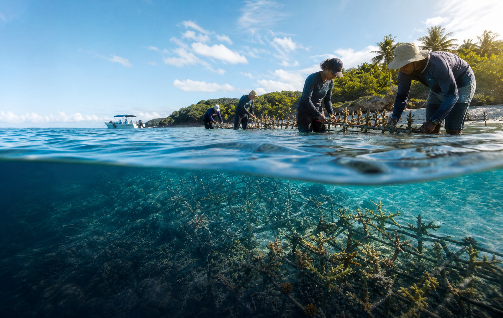

समुद्री - 2026
विश्व महासागर दिवस 2026
विश्व महासागर दिवस 2026 जलवायु कैलेंडर को तैयारी, सार्वजनिक भागीदारी और स्थानीय कार्रवाई से जोड़ता है।
देशदुनिया भर में
शहरतटीय समुदाय
स्थानतट, स्कूल और समुद्री संगठन
तिथियां8 June 2026
क्या जानें
- यह OneSliders कैलेंडर का जलवायु कार्यक्रम है, दैनिक मौसम पूर्वानुमान पेज नहीं।
- पेज तारीख, स्थान और उपयोगी संदर्भ समझाता है।
- संदेश तैयारी, पर्यावरण संरक्षण और सार्वजनिक कार्रवाई से जुड़ा है।
- लिंक और चित्र सभी भाषाओं में समान रहते हैं, लेकिन पाठ स्थानीय है।
कार्यक्रम क्रम
| दिन | चरण | क्या होता है |
|---|---|---|
| तारीख से पहले | तैयारी | आयोजक और साझेदार संदेश और गतिविधियां घोषित करते हैं। |
| कार्यक्रम दिवस | कार्रवाई | कार्यक्रम, बयान और सार्वजनिक कार्रवाई सामने आते हैं। |
| तारीख के बाद | अनुवर्ती | संदेश शिक्षा, योजना और स्थानीय कार्रवाई में जारी रहता है। |
OneSliders पर संबंधित
स्रोत: World Oceans Day बाहरी
14 मई 2026 को अपडेट